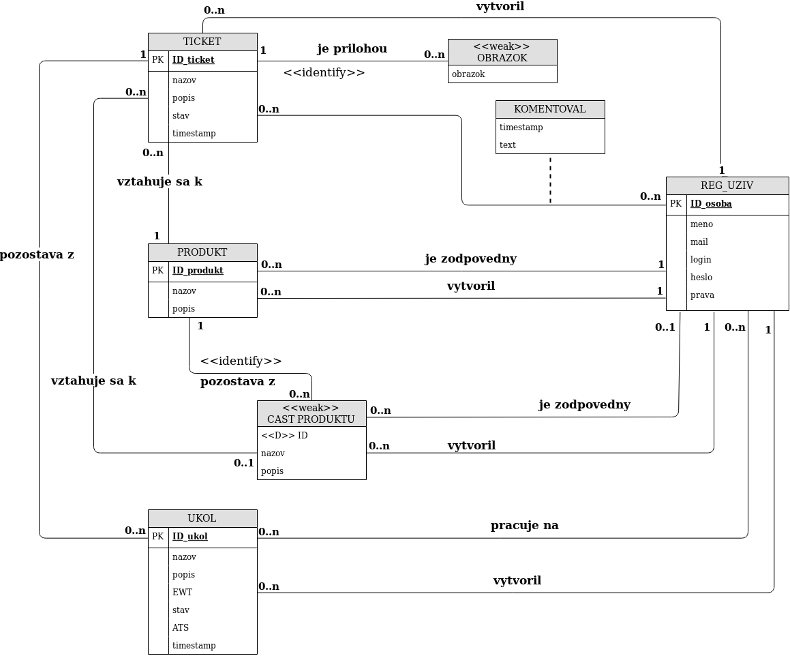

ITS (Issue Tracking System): hlášení, správa a monitoring problémů a závad
- Autori
- Daniela Pešková
xpesko00@stud.fit.vutbr.cz -
BE, RestAPI (tickets, users), návrh databázy, web hosting, dokumentácia
- Radovan Babic
xbabic09@stud.fit.vutbr.cz -
FE, návrh databázy
- Adam Kučera
xkucer95@stud.fit.vutbr.cz -
BE, RestAPI (products, authentication), implementácia databázy
- URL aplikácia
- https://merlin.fit.vutbr.cz:44556/
Užívatelia systému pre testovanie
Existujúci zástupcovia všetkých rolí uživateľov.
| Login | Heslo | Role |
|---|
| admin | 12345 | admin |
| pipi123 | hash_passwd | admin |
| Santa | iamclaus | executive |
| biggie | world_0wner | manager |
| love_and_be_loved | iL0ve_nature | employee |
| sexyteen | lArA666 | customer |
Implementácia
Použité technológie
Backend: Python 3.7.3 with web application framework Flask v. 1.1.1
Database: Python3 module SQLite3
Frontend:
Angular CLI: 8.3.19
Node: 13.2.0
Angular: 8.2.14
Popis implementácie
Adresárová štruktúra
BE/
- https_server/
- dbhandler/ - adresár obsahuje python scripty pre prácu s databázou
- restapi/ - adresár obsahuje python scripty pre obsluhu požiadaviek
- utility/ - adresár obsahuje python script pre pomocné funkcie používané vo viacerých častiach projektu
- server.py - hlavný script spúšťajúci webovú aplikáciu
- ssl/ - adresár obsahujúci nami vygenerovaný certifikát a kľúč pre https komunikáciu
- webapp/ - adresár obsahujúci primárne .html, .css a .js zdrojové súbory vygenerované zo zdrojových súborov Angularu pomocou
ng build
- create.sql - databáza projektu
FE/
- issue-tracking-system/src - zdojové
diags/
Zložka obsahujúca ERD.
doc.html
Dokumentácia k projektu.
README.md
Vzhľadom k dokumentácii ktorá obsahuje všetky potrebné informácie, rozhodli sme sa nechať README.md prázdne.
rest-api-spec.yaml
REST API implementované vo formáte Swagger.
Python scripty sú pomenované adekvátne svojej funkcionalite - napríklad BE/https_server/dbhandler/product_queries.py obsluhuje požiadavky pre databázu týkajúce sa produktov.
Frontend moduly implementované nami sa nachádzajú v FE/issue-tracking-system/src a rovnako sú pomenované vhodne ku svojej funkcionalite.
Autentifikácia
Pri spustení serveru sa vytvorí náhodný secret kľúč (json web token). Po tom čo od klienta príde požiadavka na login (json pozostávajúci z login, password),
server zakóduje prijaté údaje svojim tajným kľúčom a vytvorí token. Ten v sebe obsahuje aj id a rolu užívateľa. Token je následne
poslaný naspäť klientovi a na serverovej strane je prihlásený užívateľ vložený do globálnej tabuľky prihlásení. Kľúč je reprezentovaný id užívateľa
a hodnota je čas poslednej aktivity. Pokiaľ od času poslednej aktivity prejde 15 minút, užívateľ je automaticky odhlásený.
Databáza

Inštalácia
postup inštalácie na server
Rozhodli sme sa na web hosting použiť školský server merlin. Na implementáciu databázy sme použili SQLite3, ktorý má na
verejných serveroch veľmi slabú podporu. Ak by sme napríklad chceli využiť Heroku, museli by sme migrovať databázu na PostgreSQL.
Preto sme na serveri merlin spustili na pozadí proces serverovej aplikácie:
cd IIS_ITS/BE/https_server
python3 server.py 147.229.176.19:44556
softwarové požiadavky
- Python 3.7.3
- Flask 1.1.1
- PyJWT 1.7.0
- Click 7.0
- Jinja2 2.10.3
- MarkupSafe 1.1.0
- itsdangerous.py
- Werkzeug 0.16.0
Rozbalenie, spustenie, inicializácia databázy, ...
- Rozbalenie:
unzip xbabic09.zip
- Spustenie:
cd xbabic09/BE/https_server
python3 server.py <IP:PORT>
- Inicializácia databázy: Databáza sa vytvorí spustením skriptu
server.py v prípade, že zatiaľ nie je vytvorená.
Známe problémy
Neimplementovaná funkcionalita: pracovník vie pridávať popis riešenia svojej úlohy.
Dôvod: po finálnom prečítaní zadania sme zistili, že sme na ňu bohužiaľ zabudli. Nemodelovali sme ju v ERD.
Neimplementovaná funkcionalita: obrázky nevedia byť zobrazené na klientskej strane. V databáze sú ale modelované, rovnako sú implementované požiadavky na strane serveru.
Dôvod: nedostatok času.